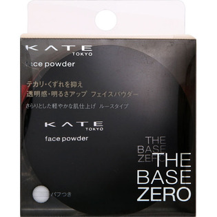
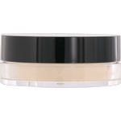

返回列表
产品名称：ケイト フェイスパウダーＡ

カネボウ化粧品 ケイト フェイスパウダーＡ グロウタイプ
メーカー カネボウ化粧品
JANコード 4973167248652
商品の特徴
さらりとした軽やかな肌仕上げ ルースタイプ
- 成分・分量
- 【成分】
タルク、シリカ、マイカ、（ビニルジメチコン／メチコンシルセスキオキサン）クロスポリマー、ラウロイルリシン、ジメチコン、ポリメチルシルセスキオキサン、ジフェニルシロキシフェニルトリメチコン、トリエトキシカプリリルシラン、水酸化Ａｌ、パーフルオロオクチルトリエトキシシラン、含水シリカ、エチルパラベン、デヒドロ酢酸Ｎａ、メチルパラベン、（＋／－）酸化チタン、酸化亜鉛、酸化鉄
- 用法及び用量
- 【使用方法】
●中のシールをはがしとり、パフをおさえながら容器ごと上下に数回ふり、パフにパウダーを移します。
●パフに移したパウダーをよくもみ込んでから、手の甲で一度なじませてご使用ください。
●シールをはがす際には、パウダーが飛び散らないようにご注意ください。